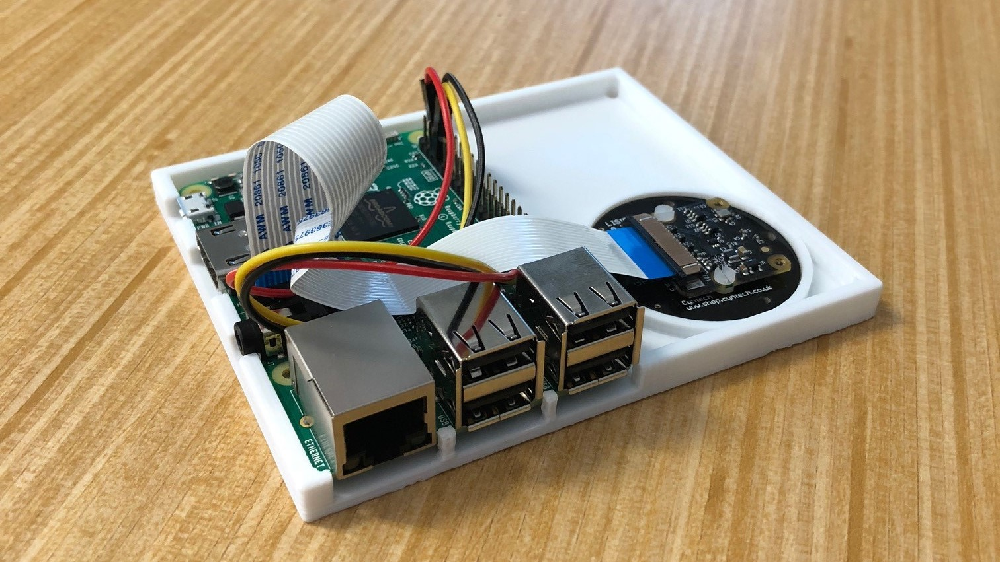

and I like making games.

In 2018, I joined the Graphics and Interactive Techniques Research Group (GITRG) and worked on an open-source, affordable motion capture system developed in Python. The system was designed to run on a host computer that received the data from cameras attached to a Raspberry Pi 3 each, with each camera detecting markers that were to be attached to whatever motion was to be translated as a computer animation.
My final project at Western Connecticut State University, a group project with the intent of designing an application using Software Engineering practices. The project is a playable game coded strictly in C#, in which the player must go through puzzles in order to obtain the keys to escape the room. Group collaborators: Malik Roc, Krishan Singh, Stephen Alpuche, and Cory Pineau.